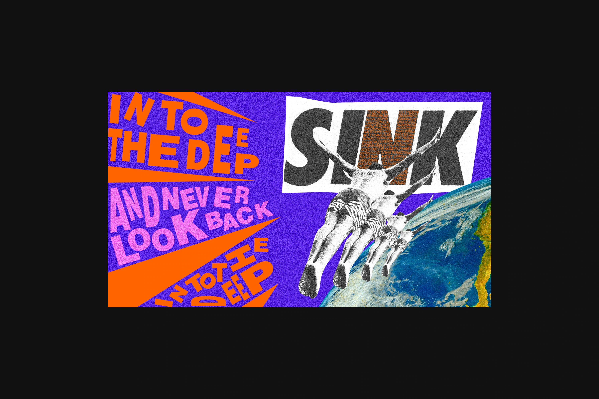
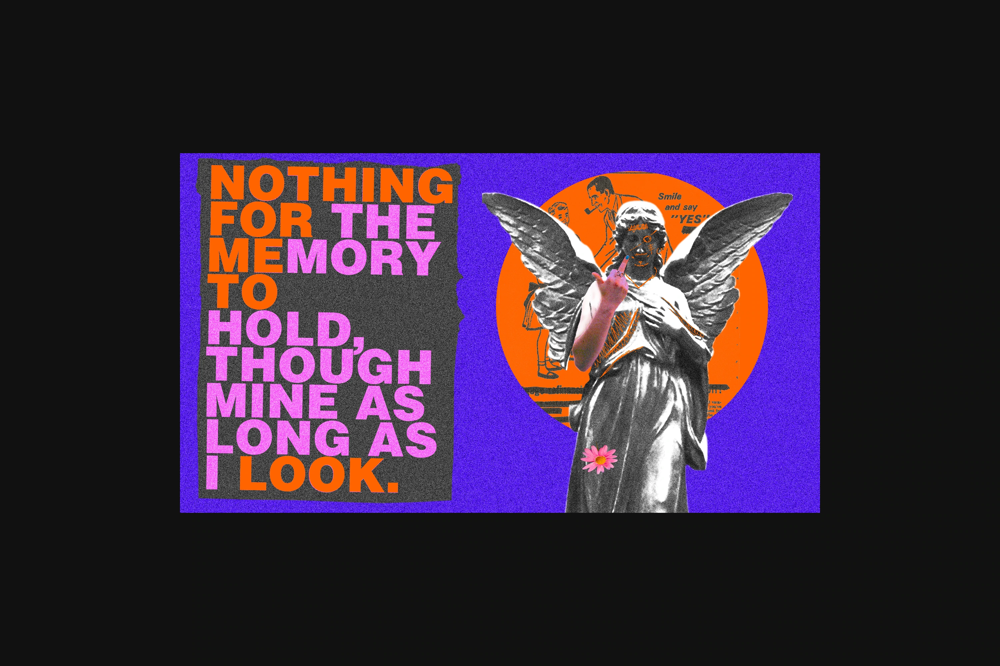
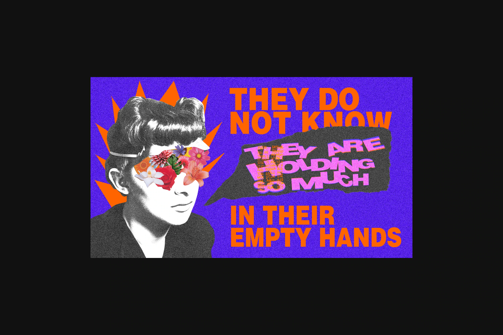
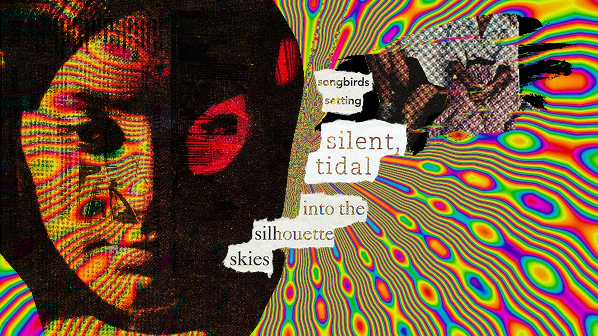
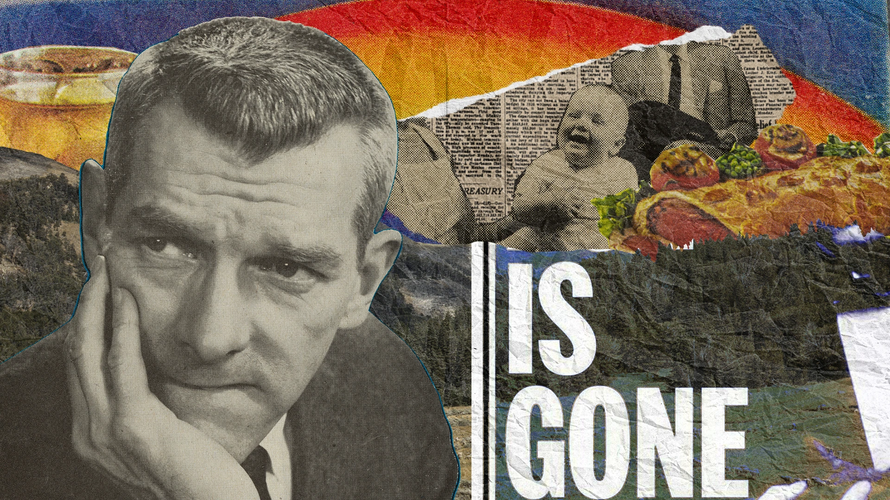
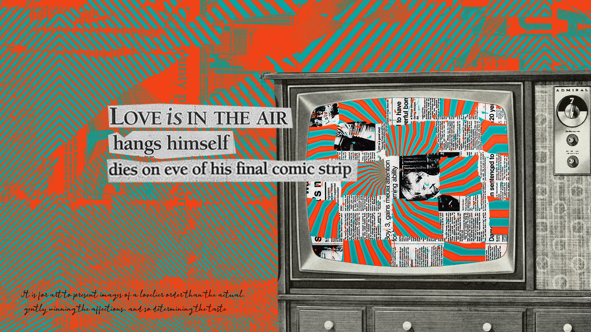
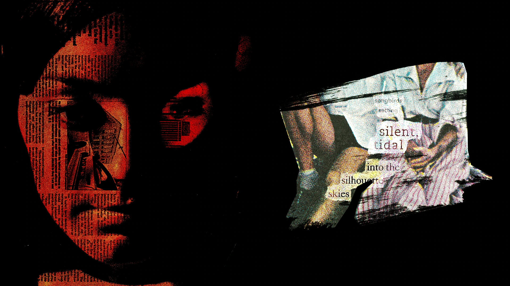
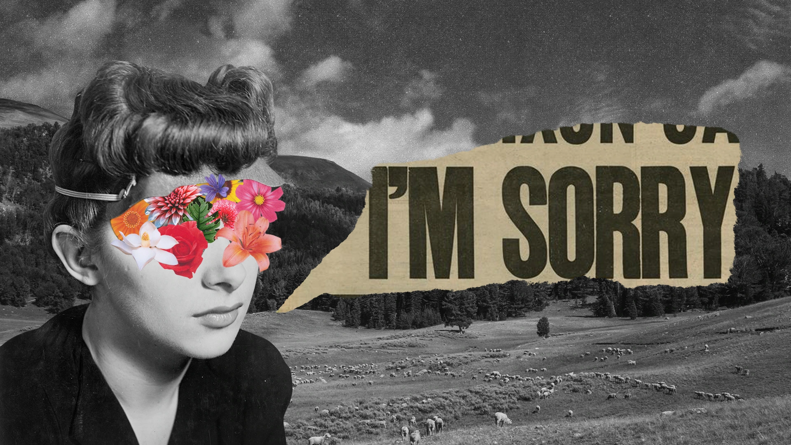

Capstone Project：不确定性与低自尊的实验影像
这是一个围绕不确定性与低自尊展开的实验影像项目，尝试将抽象的心理感受转化为画面、文字与节奏。我从网络中围绕未知事物的争论出发，逐步将研究范围收拢到认知闭合与低自尊相关议题，并将表达方式从完整的剧情动画调整为多个独立场景。视觉上，我结合数字拼贴、欧普艺术与动态文字，用电视、报纸、鸟类、螺旋和色彩条纹等元素组织画面，同时引入经过选择与改写的诗句和歌词，补充图像难以直接传达的信息。项目先完成三段场景影像，再加入四段以文字为主的动态海报式短片，最终将两组片段整合为一部实验影像，通过开场说明、画面停留与节奏变化，呈现研究中关注的情绪体验。







